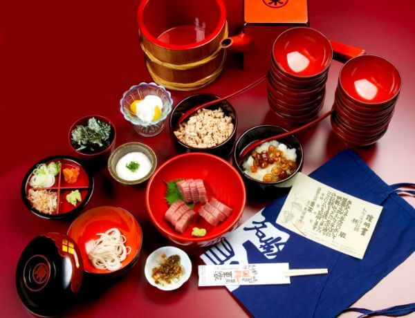

わんこそば
わんこそばは、今から約400年前、南部家第27代利直公が江戸に上られる途中、花巻に立ち寄った際に、名物のそばを出したところ、その風味をたいへんきにいり何度もおかわりしたといわれています。その際に、お椀にそばを持って出したことから「わんこそば」と呼ばれるようになったと伝えられています。盛岡には、わんこそばを提供しているお店がたくさんあります。

わんこそばは、今から約400年前、南部家第27代利直公が江戸に上られる途中、花巻に立ち寄った際に、名物のそばを出したところ、その風味をたいへんきにいり何度もおかわりしたといわれています。その際に、お椀にそばを持って出したことから「わんこそば」と呼ばれるようになったと伝えられています。盛岡には、わんこそばを提供しているお店がたくさんあります。
東家本店 〒020-0871 岩手県盛岡市中ノ橋通１丁目８−３